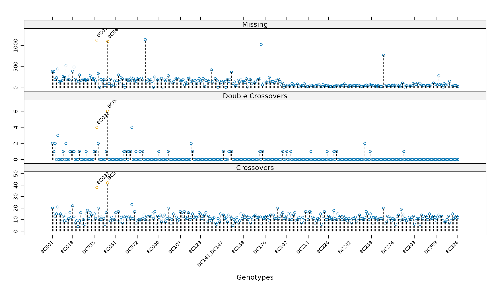
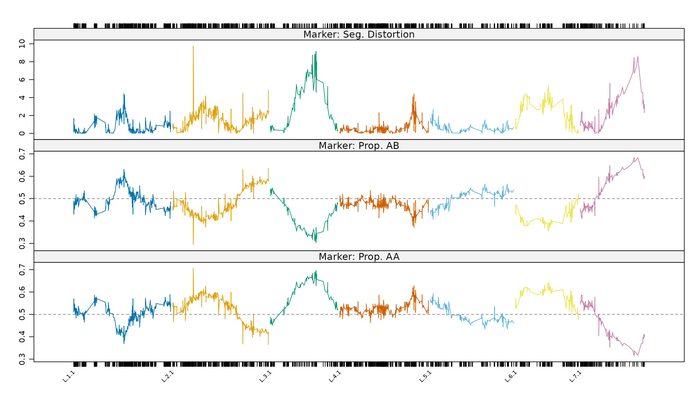

Worked example II: refinement
Source:vignettes/articles/worked-example-refinement.Rmd
worked-example-refinement.RmdThis article continues the worked example. The code below rebuilds the map as it stood at the end of Worked example I.
Pushing back markers
In this section the markers that were originally placed aside in the
pre-construction of the linkage map will be pushed back into the
constructed linkage map and the map carefully re-diagnosed. To begin the
515 external markers that have between 10% and 20% missing values
residing in the list element "missing" are pushed back in
using pushCross()
The parameter miss.thresh = 0.22 is used to ensure that
all markers with a threshold less 0.22 are pushed back into the linkage
map. Note, this pushing mechanism is not re-constructing the map and
only assigns the markers to the most suitable linkage group. At this
point it is worth re-plotting the heatmap to check whether the push has
been successful. In this vignette we will confine the graphic to linkage
groups L.3, L.5, L.8 and L.9 to determine whether the extra markers have
provided useful additional information about the possible merging of the
groups. The resulting heat map is given in the figure below.

Heat map of the constructed linkage map mapBC6.
It is clear from the heat map that there are genuine linkages between
L.3 and L.5 as well as L.8 and L.9. These two sets of linkage groups can
be merged using mergeCross() and the linkage group names
are renamed to form the optimal 7 linkage groups that are required for
the barley genome.
mapBC6 <- mergeCross(mapBC6, merge = list("L.3" = c("L.3","L.5"), "L.8" = c("L.8","L.9")))
names(mapBC6$geno) <- paste("L.", 1:7, sep = "")
mapBC7 <- mstmap(mapBC6, bychr = TRUE, trace = TRUE, dist.fun = "kosambi", p.value = 2)
chrlen(mapBC7) L.1 L.2 L.3 L.4 L.5 L.6 L.7
242.4104 233.1945 162.6205 224.1773 201.1503 147.7669 159.5308 As the optimal number of linkage groups have been identified the
re-construction of the map is performed by linkage group only through
setting the p.value = 2. At this point there is no need to
anchor the map during construction as orientation of linkage groups has
not been formally identified. The linkage group lengths of L.1, L.2 and
L.4 are slightly elevated indicating excessive recombination across
these groups. The reason for this inflation is quickly understood by
checking the profile of the genotypes again using
profileGen()
pg1 <- profileGen(mapBC7, bychr = FALSE, stat.type = c("xo","dxo","miss"), id = "Genotype", xo.lambda = 14, layout = c(1,3), lty = 2, cex = 0.7)
For individual genotypes, the number of recombinations, double recombinations and missing values for mapBC7.
the figure below shows the genotype profiles for the 302 barley
lines. The introduction of the markers with missing value proportions
between 10% and 20% into the linkage map has highlighted two more
problematic lines that have a high proportion of missing values across
the genome. Again, these should be removed using
subsetCross() and the map reconstructed.
mapBC8 <- subsetCross(mapBC7, ind = !pg1$xo.lambda)
mapBC9 <- mstmap(mapBC8, bychr = TRUE, dist.fun = "kosambi", trace = TRUE, p.value = 2)
chrlen(mapBC9) L.1 L.2 L.3 L.4 L.5 L.6 L.7
225.7900 223.3063 157.0592 206.4801 194.3003 145.7554 149.2467 The removal of these two lines will not have a deleterious effect on
the number of linkage groups and therefore the linkage map should be
reconstructed by linkage group only. The length of most linkage groups
has now been appreciably reduced. the figure below displays the
segregation distortion and allele proportion profiles for the markers
from using profileMark() again.
profileMark(mapBC9, stat.type = c("seg.dist","prop"), layout = c(1,3), type = "l")
Marker profiles of the -log10 p-value for the test of segregation distortion, allele proportions for mapBC9
The plot indicates a spike of segregation distortion on L.2 that does
not appear to be biological and should be removed. The plot also
indicates the significant distortion regions on L.3, L.6 and L.7
indicating some of the markers with missing value proportions between
10% and 20% pushed back into the linkage map also had some degree of
segregation distortion. The marker positions on the x-axis of the plot
suggests these regions are sparse. The 295 external markers in the list
element "seg.distortion" may hold the key to this sparsity
and are pushed back to determine their effect on the linkage map.
dm <- markernames(mapBC9, "L.2")[statMark(mapBC9, chr = "L.2", stat.type = "marker")$marker$neglog10P > 6]
mapBC10 <- drop.markers(mapBC9, dm)
mapBC11 <- pushCross(mapBC10, type = "seg.distortion", pars = list(seg.ratio = "70:30"))
mapBC12 <- mstmap(mapBC11, bychr = TRUE, trace = TRUE, dist.fun = "kosambi", p.value = 2)
round(chrlen(mapBC12) - chrlen(mapBC9), 5) L.1 L.2 L.3 L.4 L.5 L.6 L.7
0.20398 1.11431 0.60228 -0.92150 0.86448 -0.25043 -6.29943 L.1 L.2 L.3 L.4 L.5 L.6 L.7
0 1 156 0 0 86 52 After checking the table element of the "seg.distortion"
element, a 70:30 distortion ratio was chosen to ensure all the markers
were pushed back into the linkage map. After the pushing was complete,
the linkage map was reconstructed and linkage group lengths only changed
negligibly from the previous version of the map with distorted markers
removed. This suggests the extra markers have been inserted successfully
with nearly all distorted markers being pushed into L.3, L.6 and
L.7.
To finalise the map the 39 co-locating markers residing in the
"co.located" list element of the object are pushed back
into the linkage map and placed adjacent to the markers they were
co-located with. Note that all external co-located markers have an
immediate linkage group assignation.
[1] "geno" "pheno"A check of the final structure of the object shows the extra list
elements have been removed and only the "pheno" and
"geno" list elements remain. Users can graphically plot the
genotypes and marker/interval profiles to diagnostically assess the
final linkage map. These plots have been omitted from this report for
brevity. The final linkage map has statistics given in the table
below.
| L.1 | L.2 | L.3 | L.4 | L.5 | L.6 | L.7 | Total | Ave. | |
|---|---|---|---|---|---|---|---|---|---|
| No. of markers | 681 | 593 | 335 | 679 | 233 | 279 | 219 | 3019 | 431 |
| Lengths | 225.9 | 224.4 | 157.6 | 205.5 | 195.1 | 145.5 | 142.9 | 1297.2 | 185.3 |
| Ave. interval | 0.33 | 0.39 | 0.48 | 0.31 | 0.84 | 0.53 | 0.66 | 0.51 |
Post-construction linkage map development
After a linkage map is constructed it is very common to attempt linkage map development through the insertion of additional markers. This may be a simple fine mapping exercise where the linkage group is known in advance for an additional set of markers or it may be a more complex tasks such as the insertion of markers from an older linkage map into a newly constructed map. The procedure to successfully achieve either of these can be problematic. For example, there may need to be external manipulation, such as removal of non-concurrent genotypes, before the additional set of markers is inserted into the map. Additionally, in some cases, the linkage map may need to be partially or completely reconstructed. An unfortunate result of this reconstruction process is the possible loss of known linkage group identities.
R/ASMap provides functionality to insert additional markers into an
established linkage map without losing important linkage group
identification. The methods applied in this section assume the
additional markers, as well as the constructed linkage map, are R/qtl
cross objects of the same class. The methods are best described by
presenting several examples that mimic common post-construction linkage
map development tasks. In these examples additional markers will be
obtained by randomly selecting markers from the final linkage map,
mapBC.
set.seed(123)
add1 <- drop.markers(mapBC, markernames(mapBC)[sample(1:3019, 2700, replace = FALSE)])
mapBCs <- drop.markers(mapBC, markernames(add1))
add3 <- add2 <- add1
add2 <- subset(add2, chr = "L.1")
add3$geno[[1]]$data <- pull.geno(add1)
add3$geno[[1]]$map <- 1:ncol(add3$geno[[1]]$data)
names(add3$geno[[1]]$map) <- markernames(add1)
names(add3$geno)[1] <- "ALL"
add3 <- subset(add3, chr = "ALL")Combining two linkage maps of the same population
Many populations that are currently being researched have been
genotyped on multiple platforms and separate maps constructed for one or
both of the populations. For example, a linkage map may have been
constructed from markers genotyped on the new Illumina 90K SNP (Single
Nucleotide Polymorphism) array but the population may also have a legacy
linkage map constructed from markers stemming from SSRs (Single Sequence
Repeats) or DaRTs (Diversity Array Technology). The add1
R/qtl object mimics an older map of mapBC with 319 markers
spanning the seven linkage groups. As the linkage groups are known
between maps there is only a requirement to combine the maps in a
sensible manner and reconstruct. This can be done efficiently in R/ASMap
without external manipulation and loss of linkage group information.
add1 <- subset(add1, ind = 2:300)
full1 <- combineMap(mapBCs, add1, keep.all = TRUE)
full1 <- mstmap(full1, bychr = TRUE, trace = TRUE, anchor = TRUE, p.value = 2)This example is a classic use of the R/ASMap function
combineMap() described in section Combining maps. The two
maps are first merged on their matching genotypes and, as the first
genotype in add1 has been removed, there are missing cells
placed in the first genotype of mapBCs for the markers in
add1. The combineMap() function also
understands that both linkage maps share common linkage group names and
places the markers from shared linkage groups together. The map is then
reconstructed by linkage group using p.value = 2 in the
mstmap.cross() call, ensuring the important identity of
linkage groups are retained. In addition, setting
anchor = TRUE will ensure that the orientation of the
larger linkage map mapBCs is preserved.
Fine mapping
In marker assisted selection breeding programmes it is common to
increase the density of markers in a specific genomic region of a
linkage group for the purpose of more accurately identifying the
position of quantitative trait loci (QTL). This is known as fine
mapping. For example, the add2 object contains only markers
from the L.1 linkage group of mapBCs. When the linkage
group for the additional markers is known in advance and matches a
linkage group in the constructed map, the insertion of the new markers
is very similar to the previous section.
add2 <- subset(add2, ind = 2:300)
full2 <- combineMap(mapBCs, add2, keep.all = TRUE)
full2 <- mstmap(full2, chr = "L.1", bychr = TRUE, trace = TRUE, anchor = TRUE, p.value = 2)Again, the removal of the first genotype of add2 will
cause missing values to be added in the first genotype of
full2 for the markers that were in add2. The
mstmap.cross() call is also similar to the previous section
with the exception that only the first linkage group L.1 needs optimal
ordering.
Unknown linkage groups
There may be occasions when the linkage group identification of the
additional markers is not known in advance. For example, an incomplete
set of markers was used to construct the map or a secondary set of
markers is available that come from an unconstructed linkage map. These
additional markers can be pushed into a constructed linkage map
efficiently using the functions available in R/ASMap. In this example
the add3 R/qtl object consists of one linkage group called
ALL that contains all the markers that spanned the seven
linkage groups in add1.
add3 <- subset(add3, ind = 2:300)
full3 <- combineMap(mapBCs, add3, keep.all = TRUE)
full3 <- pushCross(full3, type = "unlinked", unlinked.chr = "ALL")
full3 <- mstmap(full3, bychr = TRUE, trace = TRUE, anchor = TRUE, p.value = 2)Again, combineMap() is used to merge the linkage maps to
avoid the hassle of having to manually match the dimensions of the
marker sets. The R/ASMap function pushCross() can then be
used to push the additional markers into the constructed linkage map. By
choosing the marker type argument type = "unlinked" and
providing the unlinked.chr = "ALL" the function recognises
that the markers require pushing back into the remaining linkage groups
of full3. Again, the mstmap.cross() call only
requires optimal ordering of the markers within linkage groups.